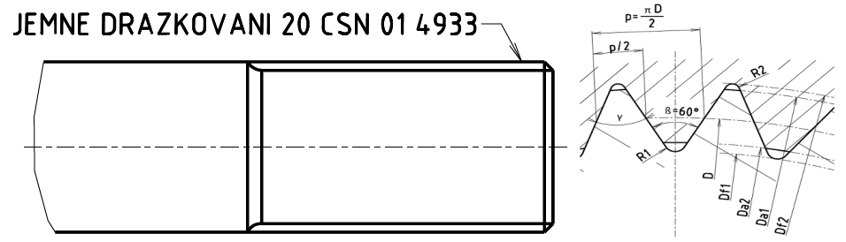

Příklad označení jemného drážkování jmenovitým rozměrem:

Délkové rozměry v milimetrech
| Jmenovitý rozměr drážkování | Počet drážek | Střední průměr D |
Drážkování vnější | Drážkování vnitřní | Úhel boků γ |
||||
|---|---|---|---|---|---|---|---|---|---|
| Hlavový průměr Da1-a11 |
Patní průměr Df1 |
Zaoblení paty R1 |
Hlavový průměr Da2-A11 |
Patní průměr Df2 |
Zaoblení paty R2 |
||||
| 8 | 28 | 7,5 | 8,1 | 6,91 | 0,08 | 6,9 | 8,21 | 0,08 | 47°08'35 |
| 10 | 28 | 9 | 10,1 | 8,26 | 0,08 | 8,1 | 9,9 | 0,08 | 47°08'35 |
| 12 | 30 | 11 | 12 | 10,2 | 0,1 | 10,1 | 12 | 0,1 | 48° |
| 14 | 31 | 13 | 14,2 | 12,06 | 0,1 | 12 | 14,18 | 0,1 | 48°23'14 |
| 17 | 32 | 16 | 17,2 | 14,91 | 0,15 | 14,9 | 17,28 | 0,15 | 48°45 |
| 20 | 33 | 18,5 | 20 | 17,37 | 0,2 | 17,3 | 20 | 0,15 | 49°05'27 |
| 24 | 34 | 22 | 23,9 | 20,76 | 0,25 | 20,8 | 23,76 | 0,15 | 49°24'42 |
| 30 | 35 | 28 | 30 | 26,40 | 0,3 | 26,5 | 30,06 | 0,25 | 49°42'52 |
| 34 | 36 | 32 | 34 | 30,38 | 0,4 | 30,5 | 34,17 | 0,3 | 50° |
| 40 | 37 | 38 | 39,9 | 35,95 | 0,4 | 36 | 40,16 | 0,5 | 50°16'13 |
| 44 | 38 | 42 | 44 | 39,72 | 0,4 | 40 | 44,42 | 0,5 | 50°31'35 |
| 50 | 39 | 47,5 | 50 | 44,97 | 0,4 | 45 | 50,2 | 0,5 | 50°46'09 |
| 55 | 40 | 52,5 | 54,9 | 49,72 | 0,4 | 50 | 55,25 | 0,6 | 51° |
| 60 | 42 | 57,5 | 60 | 54,76 | 0,5 | 55 | 60,39 | 0,6 | 51°25'43 |